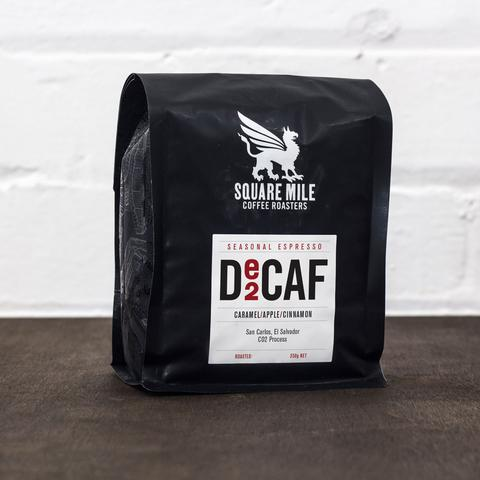

COFFEE
We work with specialty coffee from current crops which is carefully roasted. Our coffee is fruity, juicy and never boring. We bring you the best from leading european specialty roasteries, currently mostly from Square Mile Coffee Roasters, a multi award winning coffee roasting company based in East London.
You can currently buy these beans in 350 g bags
QUEJINA (GUATEMALA)

redcurrant / honeysuckle / juicy
Fruity redcurrant and sweet honeysuckle flavours. An incredibly juicy coffee which we struggled to decide on the right berry descriptor, but raspberry, blackberry and blueberry were also in the running!
KAMWANGI (GUATEMALA)

redcurrant / honeysuckle / juicy
Fruity redcurrant and sweet honeysuckle flavours. An incredibly juicy coffee which we struggled to decide on the right berry descriptor, but raspberry, blackberry and blueberry were also in the running!
MORMORA (GUATEMALA)

redcurrant / honeysuckle / juicy
Fruity redcurrant and sweet honeysuckle flavours. An incredibly juicy coffee which we struggled to decide on the right berry descriptor, but raspberry, blackberry and blueberry were also in the running!
ESPRESSO (GUATEMALA)
redcurrant / honeysuckle / juicy
Fruity redcurrant and sweet honeysuckle flavours. An incredibly juicy coffee which we struggled to decide on the right berry descriptor, but raspberry, blackberry and blueberry were also in the running!